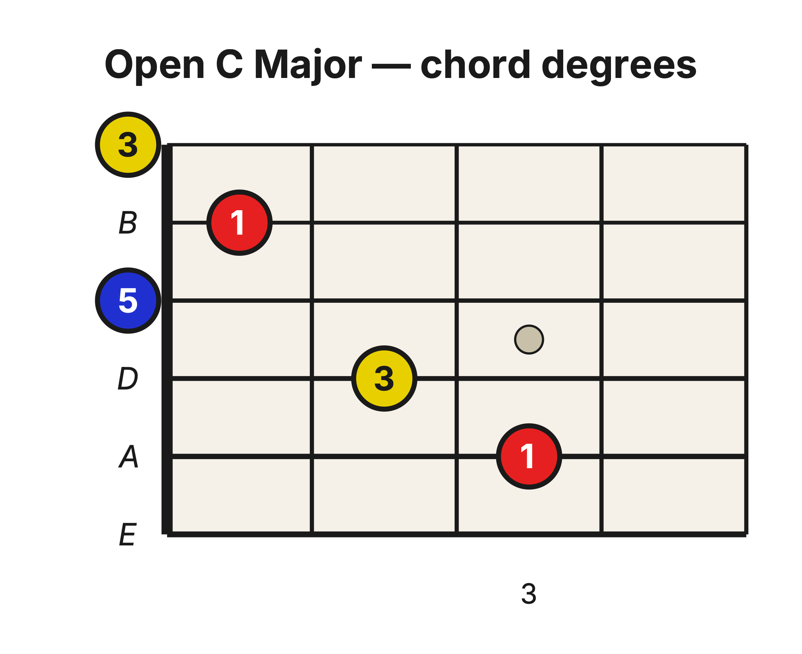
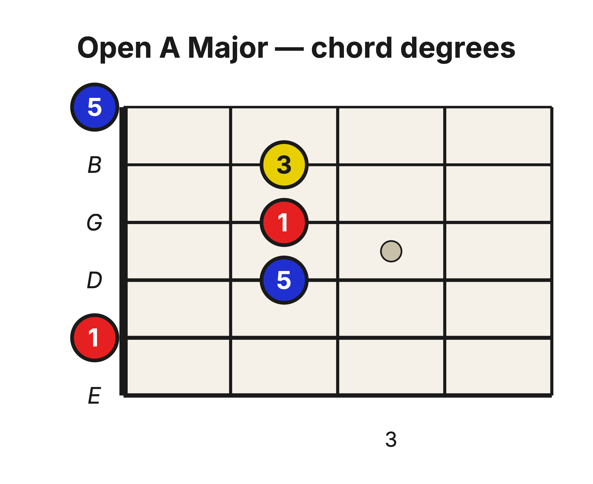
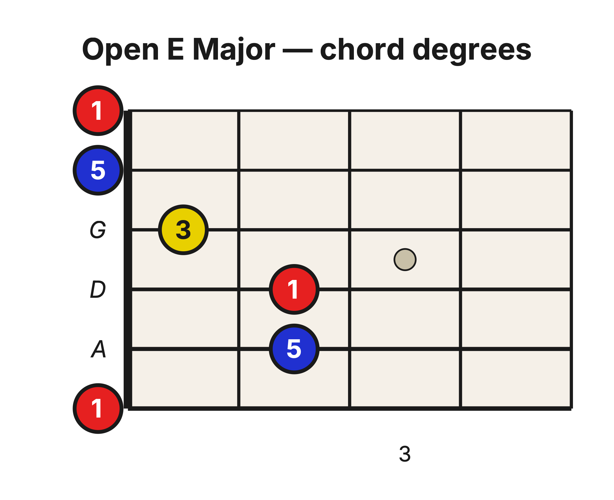

Level 2 · Chapter 10
The Fretboard: Common Major Triad Voicings
In Chapter 6, you built the Major triad in its strict three-note form: 1–3–5, with each chord degree played once. In Chapter 7, that strict triad became a compact three-string shape. But some of the most familiar guitar chords use five or even six strings. If a triad has only three notes, what are all those extra strings doing?
They are repeating notes that are already in the triad.
Return to voicings
You met this idea in Level 1 in Music Theory: Chord Voicings. A Power Chord contains only two different chord degrees, 1 and 5, but its common three-string voicing is 1–5–1. The second 1 is the root doubled an octave higher. It makes the chord sound fuller without changing which chord it is.
A voicing is a particular way of arranging a chord's notes: which degree is lowest, which octave each degree occupies, and which degrees are doubled. The strict three-note triad is one voicing—the smallest possible voicing, with 1, 3, and 5 each played once. An open-position chord can spread those same three degrees across more strings.
The diagrams below label every sounding note by its chord degree, not by its note name. The number tells you the job that note performs inside its own chord. Roots are red, 3rds are yellow, and 5ths are blue. You do not need to name every pitch on the upper strings yet; just follow the three chord degrees.
Open C: begin with 1–3–5
Use the familiar open C fingering: x–3–2–0–1–0. The x means that the 6th string does not sound.

The first three sounding strings give you the strict Major triad from Chapter 7: 1–3–5. The next two strings add another 1 and another 3. No new chord degree appears, so the chord is still made from exactly the same three ingredients.
- The root appears twice.
- The 3rd appears twice.
- The 5th appears once.
Pick strings 5–4–3 by themselves, then strum the full open chord. You have not changed the chord. You have changed its voicing.
Open A: the same degrees in a new arrangement
Now use the open A fingering: x–0–2–2–2–0. Again, the 6th string does not sound.

This voicing contains the same three roles—1, 3, and 5—but they arrive in a different order. The root and 5th are doubled; the 3rd appears once. The upper three strings hide the strict triad in plain sight: 1–3–5.
Pick strings 3–2–1, then strum all five sounding strings. The small version and the full version have the same chord identity, but the full voicing sounds thicker.
Open E: three roots across six strings
Finally, use the open E fingering: 0–2–2–1–0–0. All six strings sound.

Six strings are sounding, but only three different chord degrees are present. The root appears three times, the 5th twice, and the 3rd once. Pick strings 4–3–2 and you will hear the strict 1–3–5 triad embedded inside the larger chord.
Three chords, one principle
| Open chord | Fingering | Degrees, low to high | Embedded 1–3–5 |
| C | x–3–2–0–1–0 | 1–3–5–1–3 | Strings 5–4–3 |
| A | x–0–2–2–2–0 | 1–5–1–3–5 | Strings 3–2–1 |
| E | 0–2–2–1–0–0 | 1–5–1–3–5–1 | Strings 4–3–2 |
A, C, and E are three different Major chords, so each one has a different root. But every one of them is built from the same three chord-degree roles: root, Major 3rd, and Perfect 5th. The open shapes simply arrange and double those roles differently.
Hear the voicing change
For each chord, play the embedded three-string 1–3–5 first. Let it ring, then strum the complete open chord. Listen for two things at once:
- The chord keeps the same Major identity because its ingredients remain 1, 3, and 5.
- The sound becomes wider and fuller because some ingredients are repeated in other octaves.
Try it yourself
- How many strings sound in open C, and how many different chord degrees does it contain?
- Which degree appears three times in the open E voicing?
- Which three strings reveal the strict 1–3–5 triad inside open A?
- If you remove one doubled root or 5th from a voicing, does that create a different chord?
Answer key
- Five strings sound, but only three different chord degrees are present: 1, 3, and 5.
- The root, 1.
- Strings 3–2–1.
- No. Removing a doubled chord tone changes the voicing, but the remaining 1, 3, and 5 still define the same chord.
To sum up the chapter in one line: a triad tells you which three ingredients belong in the chord; a voicing tells you how those ingredients are arranged and doubled.